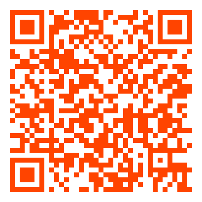

Lightning no bolso
Autocustódia mobile com Bitkit
Sobre mim
João Victor
- Desenvolvedor mobile na Synonym
- Co-host do BH Bitdevs
- Trabalho principalmente na Bitkit — uma carteira Bitcoin que roda seu próprio nó Lightning
- Mantenho o Mandacaru, um nó Bitcoin para smartphones e tablets github.com/jvsena42/mandacaru
Objetivos
O que você vai levar dessa palestra
Problema #1 · Velocidade
Onchain: ~10 min por bloco
As transações entram em uma fila — a mempool — ordenada por quem paga mais taxa por byte. Sua transação pode levar minutos ou horas até virar lei.
Solução · Velocidade
Lightning: instantâneo
Pagamentos não dependem de bloco — viajam diretamente pelos canais já abertos entre nós.
Onchain
Lightning
Problema #2 · Custo
Onchain: paga por tamanho, não por valor
A taxa é em sats/vbyte. Transferir R$ 50.000 custa o mesmo que transferir R$ 5. Ótimo pra comprar um carro — péssimo pra comprar um café.
Comprar um carro · R$ 100.000
Taxa de R$ 5 = 0,005% do valor. Tranquilo.
Comprar um café · R$ 8
Taxa de R$ 5 = 62,5% do valor. Impraticável.
Solução · Custo
Lightning: taxa proporcional
Cada hop cobra uma taxa fixa pequena (base fee) + uma fração do valor roteado (ppm — partes por milhão).
Em muitos casos a taxa total fica em centavos de centavo. Pagamentos diretos (sem hops) podem ser gratuitos.
Taxa típica: R$ 0,001 - R$ 0,05
Roteado por 1-3 nós intermediários.
Taxa: 0 sats
Quando você tem canal direto com a outra ponta.
Problema #3 · Privacidade
Onchain: tudo é público
Cada transação fica gravada para sempre em um livro-razão que qualquer pessoa pode ler.
- Endereços, valores, timestamps — abertos
- Heurísticas conectam endereços do mesmo dono
- Empresas de chain analysis vendem esses mapas
bc1q5x…87qz → bc1qa3…9km
42.000 sats · 2026-05-22 14:03:12
Cole esse endereço no mempool.space e veja saldo, histórico e quem mais transacionou com ele.
Solução · Privacidade
Lightning: muito melhor, não perfeito
Pagamentos viajam por túneis criptografados (onion routing — inspirado no Tor). Nós intermediários só conhecem o vizinho anterior e o próximo.
A invoice (BOLT11) expõe a pubkey do destinatário e, em alguns casos, route hints com canais privados.
BOLT12 (offers) esconde o destinatário com blinded paths. Já existe, mas adoção ainda é baixa.
Como funciona · 1/4
O que é um canal Lightning
Um cofre 2-de-2 entre Alice e Bob, ancorado na blockchain. Os saldos podem ser atualizados milhões de vezes sem tocar a 1ª camada.
Como funciona · 2/4
Abertura e fechamento — 2 toques na 1ª camada
Tudo no meio é off-chain, instantâneo e barato. A blockchain só vê a transação que ancora o canal e a que o encerra.
Trava os fundos no cofre 2-de-2.
~10 min, paga fee onchain
Milhões de atualizações de saldo possíveis.
Instantâneo, taxa baixíssima
Liquida o saldo final na blockchain.
Cooperativo ou unilateral
Como funciona · 3/4
Pagamento dentro do canal
Alice paga 200k sats para o Bob: o canal apenas atualiza o saldo das duas pontas — nenhuma transação onchain.
Como funciona · 4/4
Roteamento — pagando sem canal direto
Alice quer pagar Dani, mas não tem canal direto. A rede encontra um caminho através de nós que ela já conhece.
Decisão de design
Por que uma 2ª camada — e não mudar a 1ª?
"Por que não aumentar o tamanho do bloco e reduzir o tempo entre blocos?"
Isso traria velocidade e fees mais baixas na 1ª camada.
Blocos maiores = mais hardware, mais banda, mais armazenamento para validar.
Menos pessoas conseguem rodar um nó completo.
Em TI raramente existe solução única — toda escolha tem trade-off. Bitcoin escolheu descentralização.
Custódia · 1/2
Custodial — chaves de outra pessoa
- Conveniência: baixou o app, criou conta, pronto
- Backup é fácil: email + senha
- Sem responsabilidade técnica — alguém cuida do nó pra você
- Risco de contraparte (a empresa pode quebrar, sumir ou ser hackeada)
- Custódia = controle: podem congelar, bloquear ou exigir KYC
- Você é um cliente, não um usuário soberano
Custódia · 2/2
Não-custodial — suas chaves
Você é dono real dos sats. Ninguém pode censurar, congelar ou exigir documentos. Em troca: você é responsável pelos backups, pela segurança das chaves e pela manutenção.
Soberania, privacidade, resistência à censura, propriedade real.
Backup do seed, custódia do canal state, decisões técnicas.
Desafios · 1/2
Tecnicidade & manutenção
Patches de segurança no nó BTC e no nó LN. Quem não atualiza expõe risco de fundos.
Cada pagamento muda o estado do canal — backup desatualizado pode causar perda parcial dos fundos.
Serviços que vigiam o canal por você. Se a outra ponta tentar trapacear, a watchtower publica a evidência onchain.
Disco rápido, RAM, banda, eletricidade — um nó completo come algumas centenas de GB e fica sempre ligado.
Desafios · 2/2
Online 24/7 & balanceamento
Sempre ligado
Se o seu nó cai, você não recebe pagamentos — e canais com peer offline ficam parados.
Liquidez nos dois sentidos
Para enviar você precisa de saldo local (outbound). Para receber precisa de saldo remoto (inbound). Conseguir os dois exige planejamento — e às vezes pagar por isso.
Nós mobile
Por que rodar tudo isso no celular?
O smartphone é o computador pessoal hoje. Ele está sempre com você, sempre conectado.
- Bateria e CPU limitadas
- Conectividade intermitente (4G/Wi-Fi caindo)
- O sistema operacional mata processos em background
- Armazenamento pequeno comparado a um servidor
Bitkit · LSP
LSP — Lightning Service Provider
Um nó bem conectado que abre um canal pra você com liquidez nos dois sentidos — você ganha tempo, sem abrir mão das chaves.
Bitkit · Online sob demanda
Wake to pay — push notification acorda o nó
O app vive dormindo. Quando alguém quer te pagar, o LSP dispara uma push notification silenciosa que dá ao app alguns segundos em background — o suficiente pra receber o HTLC.
nó offline
Bitkit · Plano B
Foreground service — quando o push falha
Push notifications não são garantidas. O Google/Apple podem atrasar, agrupar ou simplesmente não entregar.
Para usuários que querem garantia, a Bitkit oferece um foreground service: o app mantém uma notificação persistente e fica online o tempo todo.
+ Recebe pagamentos com 100% de confiabilidade
− Consome mais bateria
− Notificação fixa na barra de status
Cada um escolhe entre bateria e garantia.
Bitkit · Roteamento
External scorer — a sabedoria da rede
Nós Lightning escolhem rotas por probabilidade de sucesso. Quanto mais tempo online, melhor o nó "aprende" quais rotas funcionam.
Um nó mobile passa a maior parte do tempo offline — quase não aprende.
Baixa periodicamente um scorer pré-computado de um servidor que observa a rede 24/7.
Resultado: pagamentos saem com taxa de sucesso comparável à de um nó full-time.
Bitkit · Sync
RGS — Rapid Gossip Sync
A topologia da rede Lightning é construída a partir de gossip: milhares de mensagens sobre canais abertos, fechados, taxas etc.
Reconstruir tudo a cada boot do app levaria muito tempo e muitos dados — inviável no mobile.
Snapshot compactado da rede + deltas — baixado em segundos.
Boot rápido, dados móveis preservados, rotas viáveis disponíveis na hora.
Bitkit · Na prática
Carteira Bitcoin + nó Lightning próprio no celular
- Open source — github.com/synonymdev
- iOS & Android, regtest/testnet/mainnet
- LSP integrado, wake-to-pay, scorer externo, RGS
- Suas chaves, seus canais
Recap
O que ficou
Obrigado!
Continue a conversa no próximo BH Bitdevs
Leve suas perguntas para o próximo Bitdevs
